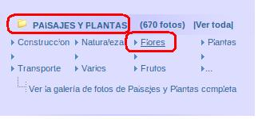

1.1. Paso previo - Disponer de Imágenes o Fotografías
Antes de iniciar el proyecto debemos disponer de una serie de fotografías. Puedes utilizar fotografías propias o descargar las mismas de algún lugar de internet. En nuestro caso hemos acudido a la web la ciudad de las fotos para descargar algunas.
Explicamos los pasos realizados:
-
Una vez entramos en la web, localizamos el apartado de PAISAJES Y PLANTAS y el sub-apartado de flores.
-
Nos aparecerán una serie de fotos (en miniatura) y procedemos a seleccionar una de las mismas y hacer clic sobre ella para que recupere el tamaño real.
-
Con la imagen en visión preliminar procederemos a descargar la misma para una carpeta determinada. En nuestro caso hemos generado una carpeta en nuestro escritorio denominada flores.
-
Utilizamos el botón derecho (a) y guardar como (b). Con ello descargamos la foto a nuestro ordenador. Cuando terminemos la bajada, podemos visualizar otras fotos (c).
- En el momento de la descarga podemos mantener el nombre de la imagen o modificarlo (d) e indicarle la carpeta en la que deseamos guardarla (e) y guardar (f)..
- Repetiremos el proceso unas 15 o más veces para disponer de suficientes fotografías. Nuestra carpeta tendrá un aspecto parecido.
Este pasos anteriores no son necesarios si disponemos de imágenes propias en nuestro ordenador. También podemos descargar fotografías de nuestras redes sociales o de cualquier fuente de imágenes de la web.
En el apartado de Enlaces Interesantes te mostramos algunas webs de donde obtener fotos e imágenes, pero la red está llena de sitios.
Recuerda siempre no utilizar imágenes que tengan derechos reservados.
Jo.R.C.A. 2004 - 2011

Edición de Audio y Video con Software Libre by José Ramón Cerdeira Alonso is licensed under a Creative Commons Reconocimiento-No comercial-Compartir bajo la misma licencia 3.0 España License